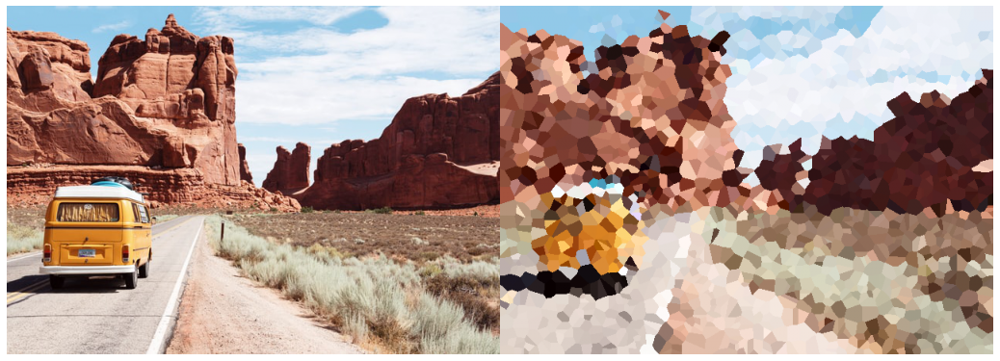
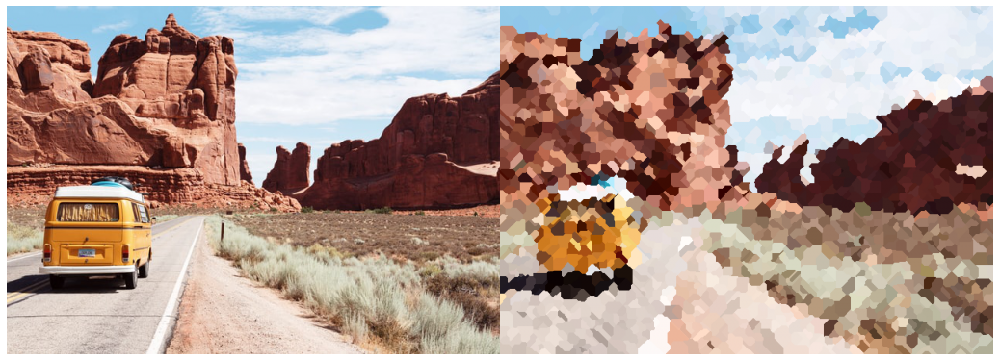
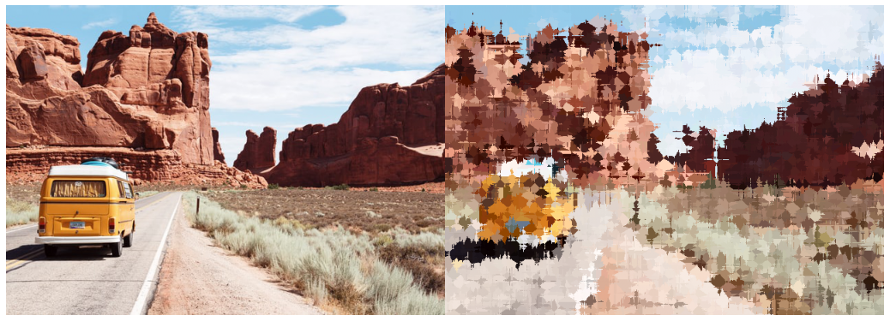
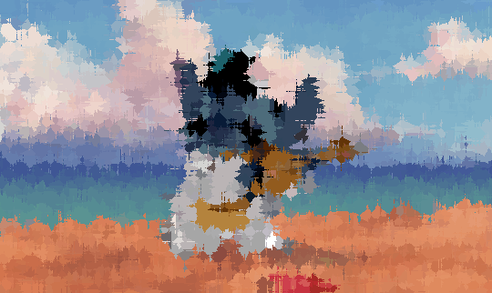

They say there is no such thing as bad art, yet I am very well aware that my artwork is lousy. For the life of me, I can't draw. But what I can do is math and turn that arithmetic magic into something... well, let's just call it pleasing. Digital art is definitely not a new concept. Since the invention of transistors, people have been doing creative artwork with the technology. Very recently in terms of artifical intelligence, GANs, or Generative Adversial Networks with the power of computer vision, have produced artistically beautiful results like style transfer, deep dream and many more. This post, on the other hand, is not overly complicated. We will experiment with simple mathematical functions like calculating the distance between two pixels in an existing image and then superimposing the new value over a mask image and hope it looks nice to see.
It is fairly straightforward to compute the distance between two scalar coordinates. Simply enter the coordinates into a function to obtain the output. However, calculating the distance between two pixels might be difficult. My method was to construct a mask array with the same size as the original image, then calculate the distance between the two arrays for each pixel coordinate. But since we only need one coordinate, I used the argmin fucntion to get the indices of the minumum value of the matrix and called the pixel value of this new location at the old image, then applied it to the new mask picture. The distance can be determined using any of the well-known machine learning distance metrics like Eucledian, Chebyshev, and Minkowski that were all used in this experiment.
Eucledian distance
From an non artist point of view, it looks like a oil painting with a digital brush. Maybe other distance functions might change the style of the image. Let's see. 
Chebyshev distance
Looks like the result for Eucledian and Chebyshev are not that much different. 
Minkowski distance
This one is my favourite. 
What about videos?
Videos are esentially just image frames stacked in a sequence. We can apply the same function to all the frames and get a nice looking video. Let's take a look at the example, 
Thank you for reading this article. This was a hobby project of mine done within a day during my free time. All input images were obtained from Unsplash or Giphy. The resultant images were certainly interesting from the fact that some simple mathematical functions can create something beautiful. The output is not limited to these three distance parameters but can be easily adapted to other ones like for eg, Manhattan, Hamming distance etc.. I hope you liked it. If you want to create your own dank art, visit the notebook and play around with the parameters here.